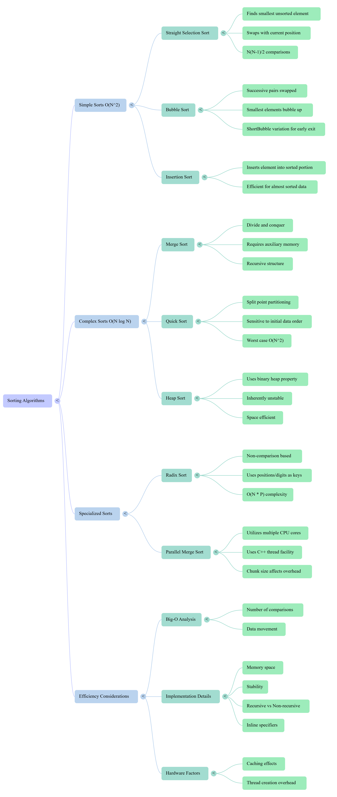

Xinxing Wu
<p class='titlep'> </p> # Sorting <hr> <br> Xinxing Wu
# Outline [<p class="hover-underline-animation">Selection Sort</p>](#/ch1) [<p class="hover-underline-animation">Bubble Sort</p>](#/ch2) [<p class="hover-underline-animation">Insertion Sort</p>](#/ch3)
# Outline (cont.) [<p class="hover-underline-animation">$\mathcal{O}(n \log n)$ idea + Merge Sort</p>](#/ch4) [<p class="hover-underline-animation">Summary</p>](#/ch5) [<p class="hover-underline-animation">Application</p>](#/ch6) [<p class="hover-underline-animation">* Quick Sort</p>](#/ch7)
## Goal <div id="shadebox-neon" class="shadebox neon"> By the end, you can: - Trace **Selection**, **Bubble**, **Insertion** sort on paper - Write each one in **simple C++** - Explain why some are **$\mathcal{O}(n^2)$** and why merge sort is **$\mathcal{O}(n \log n)$** </div>
<p class="definition-rainbow-title">Selection Sort</p>
<div class="definition-pro-Y-container"> <div class="definition-pro-Y-title">Selection Sort</div> <div class="definition-pro-Y-shadebox"> <div style="width: 800px;"></div> Selection Sort + tracing + code </div> </div> <div class="definition-pro-Y-container"> <div class="definition-pro-Y-title">What is sorting?</div> <div class="definition-pro-Y-shadebox"> <div style="width: 800px;"></div> We have a list/array like: `[36, 24, 10, 6, 12]` We want: `[6, 10, 12, 24, 36]` </div> </div> <div class="definition-pro-Y-container"> <div class="definition-pro-Y-title">Sorting algorithms</div> <div class="definition-pro-Y-shadebox"> <div style="width: 800px;"></div> When comparing sorting algorithms, we often count: - **<spanGREEN>Comparisons</spanGREEN>**: how many times we compare two values <br> <br> - **<spanGREEN>Swaps / moves</spanGREEN>**: how many times data is moved <br> <br> - (Sometimes) **<spanGREEN>extra</spanGREEN> memory** used </div> </div> <div class="definition-pro-Y-container"> <div class="definition-pro-Y-title">Quick warm-up question</div> <div class="definition-pro-Y-shadebox"> If you have **N items**, how many comparisons is “a lot”? - If $N = 10$ → maybe ~45 comparisons is not scary <br> <br> - If $N = 10,000$ → millions of comparisons becomes real time </div> </div> <div class="definition-pro-Y-container"> <div class="definition-pro-Y-title">print an array</div> <div class="definition-pro-Y-shadebox"> <div style="width: 800px;"></div> <div style="font-size: 1.6em; line-height: 1.5;"> ``` #include <iostream> using namespace std; void printArray(const int a[], int n) { cout << "["; for (int i = 0; i < n; i++) { cout << a[i]; if (i != n - 1) cout << ", "; } cout << "]\n"; } ``` </div> </div> </div> <div class="definition-pro-Y-container"> <div class="definition-pro-Y-title">swap two ints</div> <div class="definition-pro-Y-shadebox"> <div style="width: 800px;"></div> <div style="font-size: 1.6em; line-height: 1.5;"> ``` void swapInt(int &x, int &y) { int temp = x; x = y; y = temp; } ``` </div> </div> </div> <div class="definition-pro-Y-container"> <div class="definition-pro-Y-title">Test</div> <div class="definition-pro-Y-shadebox"> <div style="width: 800px;"></div> <div style="font-size: 1.6em; line-height: 1.5;"> ``` int main() { int a[5] = {36, 24, 10, 6, 12}; printArray(a, 5); swapInt(a[0], a[3]); printArray(a, 5); } ``` </div> </div> </div> <div class="definition-pro-Y-container"> <div class="definition-pro-Y-title">Selection Sort</div> <div class="definition-pro-Y-shadebox"> <div style="width: 800px;"></div> Repeat: <div id="shadebox"> - Find the smallest in the unsorted part - Swap it into the next “correct” position </div> </div> </div> <div class="definition-pro-Y-container"> <div class="definition-pro-Y-title">Selection Sort</div> <div class="definition-pro-Y-shadebox"> <div style="width: 800px;"></div> We split the array into two parts: - Left: sorted - Right: unsorted <hr> At the start: Sorted: <div id="shadebox"> (empty) Unsorted vs everything </div> </div> </div> <div class="definition-pro-Y-container"> <div class="definition-pro-Y-title">Example array</div> <div class="definition-pro-Y-shadebox"> <div style="width: 800px;"></div> Start: [36, 24, 10, 6, 12] <hr style="border:0;height:6px;border-radius:999px;background:linear-gradient(90deg,#ff3b3b,#ffb13b,#fff23b,#3bff8f,#3bc8ff,#8a3bff,#ff3b3b);background-size:300% 100%;animation:rainbowLine 4s linear infinite;"><style>@keyframes rainbowLine{0%{background-position:0% 50%}100%{background-position:300% 50%}}</style> Goal: [6, 10, 12, 24, 36] </div> </div> <div class="definition-pro-Y-container"> <div class="definition-pro-Y-title">Selection Sort (round 1)</div> <div class="definition-pro-Y-shadebox"> <div style="width: 800px;"></div> - Array: [36, 24, 10, 6, 12] - Unsorted = whole array → smallest is 6 - Swap 36 with 6 <hr style="border: none; border-top: 1.5px solid cyan;"> After <spanGREEN>round 1</spanGREEN>: [6, 24, 10, 36, 12] </div> </div> <div class="definition-pro-Y-container"> <div class="definition-pro-Y-title">Selection Sort (round 2)</div> <div class="definition-pro-Y-shadebox"> <div style="width: 800px;"></div> - Sorted part is now [6] - Unsorted part is [24, 10, 36, 12] - Smallest in unsorted is 10 - Swap 24 with 10 <hr style="border: none; border-top: 1.5px solid cyan;"> After <spanGREEN>round 2</spanGREEN>: [6, 10, 24, 36, 12] </div> </div> <div class="definition-pro-Y-container"> <div class="definition-pro-Y-title">Selection Sort (round 3)</div> <div class="definition-pro-Y-shadebox"> <div style="width: 800px;"></div> - Sorted: [6, 10] - Unsorted: [24, 36, 12] - Smallest is 12 - Swap 24 with 12 <hr style="border: none; border-top: 1.5px solid cyan;"> After <spanGREEN>round 3</spanGREEN>: [6, 10, 12, 36, 24] </div> </div> <div class="definition-pro-Y-container"> <div class="definition-pro-Y-title">Selection Sort (round 4)</div> <div class="definition-pro-Y-shadebox"> <div style="width: 800px;"></div> - Sorted: [6, 10, 12] - Unsorted: [36, 24] - Smallest is 24 - Swap 36 with 24 <hr style="border: none; border-top: 1.5px solid cyan;"> After <spanGREEN>round 4</spanGREEN>: [6, 10, 12, 24, 36] ✅ </div> </div> <div class="definition-pro-Y-container"> <div class="definition-pro-Y-title">Selection Sort</div> <div class="definition-pro-Y-shadebox"> <div style="width: 800px;"></div> <div style="font-size: 1.6em; line-height: 1.5;"> ``` void selectionSort(int a[], int n) { for (int current = 0; current < n - 1; current++) { // find index of smallest from current..n-1 int minIndex = current; for (int i = current + 1; i < n; i++) { if (a[i] < a[minIndex]) { minIndex = i; } } // swap into position current swapInt(a[current], a[minIndex]); } } ``` </div> </div> </div> <div class="definition-pro-Y-container"> <div class="definition-pro-Y-title">Run it</div> <div class="definition-pro-Y-shadebox"> <div style="width: 800px;"></div> <div style="font-size: 1.6em; line-height: 1.5;"> ``` int main() { int a[5] = {36, 24, 10, 6, 12}; selectionSort(a, 5); printArray(a, 5); } ``` </div> </div> </div> Expected: [6, 10, 12, 24, 36] <div class="definition-pro-Y-container"> <div class="definition-pro-Y-title">print after each pass</div> <div class="definition-pro-Y-shadebox"> <div style="width: 800px;"></div> <div style="font-size: 1.6em; line-height: 1.5;"> ``` void selectionSortShow(int a[], int n) { for (int current = 0; current < n - 1; current++) { int minIndex = current; for (int i = current + 1; i < n; i++) { if (a[i] < a[minIndex]) minIndex = i; } swapInt(a[current], a[minIndex]); cout << "After pass " << current + 1 << ": "; printArray(a, n); } } ``` </div> </div> </div> <div class="definition-pro-Y-container"> <div class="definition-pro-Y-title">How many comparisons?</div> <div class="definition-pro-Y-shadebox"> <div style="width: 800px;"></div> - In pass 1: compare ~ ($N-1$) times - pass 2: compare ~ ($N-2$) times - … - last pass: compare 1 time - Total comparisons: $$ (N-1) + (N-2) + ... + 1 = N(N-1)/2 $$ </div> </div> <div class="definition-pro-Y-container"> <div class="definition-pro-Y-title">Concrete numbers (feel the growth)</div> <div class="definition-pro-Y-shadebox"> <div style="width: 800px;"></div> Using $N(N-1)/2$: - $N=10$ → 45 - $N=20$ → 190 - $N=100$ → 4,950 - $N=1,000$ → 499,500 - $N=10,000$ → 49,995,000 </div> </div> <div class="definition-pro-Y-container"> <div class="definition-pro-Y-title">Big-O</div> <div class="definition-pro-Y-shadebox"> <div style="width: 800px;"></div> Selection sort comparisons scale like: ~ $n^2/2$ So it’s $\mathcal{O}(n^2)$. </div> </div> <div class="definition-pro-Y-container"> <div class="definition-pro-Y-title">Practice</div> <div class="definition-pro-Y-shadebox"> <div style="width: 800px;"></div> Trace selection sort on: - [5, 1, 4, 2] Write the array after each pass. <button type="button" class="reveal-btn" data-answer="answer-q1">Show Answer</button> <div id="answer-q1" class="answer-box"> <b>Answer:</b>Start: [5, 1, 4, 2]; Pass1: smallest is 1 → [1, 5, 4, 2]; Pass2: smallest in [5,4,2] is 2 → [1, 2, 4, 5]; Pass3: smallest in [4,5] is 4 → [1, 2, 4, 5] </div> </div> </div>
<p class="definition-rainbow-title">Bubble Sort</p>
<div class="definition-pro-Y-container"> <div class="definition-pro-Y-title">Bubble Sort</div> <div class="definition-pro-Y-shadebox"> <div style="width: 800px;"></div> Bubble Sort + “Short Bubble” + code </div> </div> <div class="definition-pro-Y-container"> <div class="definition-pro-Y-title">Bubble Sort (cont.)</div> <div class="definition-pro-Y-shadebox"> We repeatedly “bubble” the smallest value upward (toward the front) by swapping out-of-order neighbors. </div> </div> <div class="definition-pro-Y-container"> <div class="definition-pro-Y-title">BubbleUp: one pass</div> <div class="definition-pro-Y-shadebox"> One pass compares neighbor pairs and swaps if needed. We’ll do it from the end going backward: - compare $a[i]$ and $a[i-1]$ - if $a[i] < a[i-1]$ → swap </div> </div> <div class="definition-pro-Y-container"> <div class="definition-pro-Y-title">BubbleUp code</div> <div class="definition-pro-Y-shadebox"> <div style="width: 800px;"></div> <div style="font-size: 1.6em; line-height: 1.5;"> ``` void bubbleUp(int a[], int startIndex, int endIndex) { for (int i = endIndex; i > startIndex; i--) { if (a[i] < a[i - 1]) { swapInt(a[i], a[i - 1]); } } } ``` </div> </div> </div> <div class="definition-pro-Y-container"> <div class="definition-pro-Y-title">Bubble sort using BubbleUp</div> <div class="definition-pro-Y-shadebox"> <div style="width: 800px;"></div> <div style="font-size: 1.6em; line-height: 1.5;"> ``` void bubbleSort(int a[], int n) { for (int current = 0; current < n - 1; current++) { bubbleUp(a, current, n - 1); } } ``` </div> </div> </div> <div class="definition-pro-Y-container"> <div class="definition-pro-Y-title">Bubble sort trace</div> <div class="definition-pro-Y-shadebox"> <div style="width: 800px;"></div> Start: [36, 24, 10, 6, 12] - After 1st bubbleUp (current=0): - Smallest (6) moves to front - Result: [6, 36, 24, 10, 12] </div> </div> <div class="definition-pro-Y-container"> <div class="definition-pro-Y-title">Completed code for Bubble algorithm</div> <div class="definition-pro-Y-shadebox"> <div style="width: 800px;"></div> <div style="font-size: 1.6em; line-height: 1.5;"> ``` #include <iostream> using namespace std; void swapInt(int &x, int &y) { int temp = x; x = y; y = temp; } void bubbleSort(int a[], int n) { for (int startIndex = 0; startIndex < n - 1; startIndex++) { for (int i = n - 1; i > startIndex; i--) { if (a[i] < a[i - 1]) { swapInt(a[i], a[i - 1]); } } } } int main() { int a[] = {10, 3, 11, 5, 1}; int n = 5; bubbleSort(a, n); for (int i = 0; i < n; i++) { cout << a[i] << " "; } return 0; } ``` </div> </div> </div> <div class="definition-pro-Y-container"> <div class="definition-pro-Y-title">print each pass</div> <div class="definition-pro-Y-shadebox"> <div style="width: 800px;"></div> <div style="font-size: 1.6em; line-height: 1.5;"> ``` void bubbleSortShow(int a[], int n) { for (int current = 0; current < n - 1; current++) { bubbleUp(a, current, n - 1); cout << "After pass " << current + 1 << ": "; printArray(a, n); } } ``` </div> </div> </div> <div class="definition-pro-Y-container"> <div class="definition-pro-Y-title">Bubble sort comparisons</div> <div class="definition-pro-Y-shadebox"> <div style="width: 800px;"></div> Bubble sort also does about: $$ (n-1) + (n-2) + ... + 1 = n(n-1)/2 $$ So bubble sort is also $\mathcal{O}(n^2)$. </div> </div> <div class="definition-pro-Y-container"> <div class="definition-pro-Y-title">Bubble sort</div> <div class="definition-pro-Y-shadebox"> <div style="width: 800px;"></div> - Bubble sort may do many swaps (data movement), especially on messy / reverse-ordered data. - Selection sort does fewer swaps (usually one swap per pass). </div> </div> <div class="definition-pro-Y-container"> <div class="definition-pro-Y-title">Bubble sort (cont.)</div> <div class="definition-pro-Y-shadebox"> <div style="width: 800px;"></div> - If the array becomes sorted early, we can <spanRED>stop</spanRED> early instead of doing all passes. - We use a boolean flag like sorted </div> </div> <div class="definition-pro-Y-container"> <div class="definition-pro-Y-title">Bubble: bubbleUp that reports swaps</div> <div class="definition-pro-Y-shadebox"> <div style="width: 800px;"></div> <div style="font-size: 1.6em; line-height: 1.5;"> ``` void bubbleUp2(int a[], int startIndex, int endIndex, bool &sorted) { sorted = true; // assume sorted unless we make a swap for (int i = endIndex; i > startIndex; i--) { if (a[i] < a[i - 1]) { swapInt(a[i], a[i - 1]); sorted = false; // we had to fix something } } } ``` </div> </div> </div> <div class="definition-pro-Y-container"> <div class="definition-pro-Y-title">Bubble sort</div> <div class="definition-pro-Y-shadebox"> <div style="width: 800px;"></div> <div style="font-size: 1.6em; line-height: 1.5;"> ``` void shortBubble(int a[], int n) { bool sorted = false; int current = 0; while (current < n - 1 && !sorted) { bubbleUp2(a, current, n - 1, sorted); current++; } } ```` </div> </div> </div> <div class="definition-pro-Y-container"> <div class="definition-pro-Y-title">Bubble sort</div> <div class="definition-pro-Y-shadebox"> - If array is already sorted, it can stop quickly - In that best case, it becomes close to $\mathcal{O}(n)$ comparisons (one pass, no swaps) Worst case is still $\mathcal{O}(n^2)$. </div> </div> <div class="definition-pro-Y-container"> <div class="definition-pro-Y-title">Practice</div> <div class="definition-pro-Y-shadebox"> Which sort would you pick for almost-sorted data? - A) Selection - B) Bubble - C) Short Bubble <button type="button" class="reveal-btn" data-answer="answer-q2">Show Answer</button> <div id="answer-q2" class="answer-box"> <b>Answer:</b>C) Short Bubble. Because it can stop early when no swaps happen. </div> </div> </div>
<p class="definition-rainbow-title">Insertion Sort</p>
<div class="definition-pro-Y-container"> <div class="definition-pro-Y-title">Insertion Sort</div> <div class="definition-pro-Y-shadebox"> Insertion Sort + code + when it’s fast </div> </div> <div class="definition-pro-Y-container"> <div class="definition-pro-Y-title">Insertion Sort</div> <div class="definition-pro-Y-shadebox"> <div style="width: 800px;"></div> Insertion sort in one sentence - We grow a sorted part by taking the next item and inserting it into the correct position. <hr style="border: none; border-top: 2px dashed orange;"> Think “sorting cards in your hand” - You keep your hand sorted. You take one new card and slide it into the right spot. </div> </div> <div class="definition-pro-Y-container"> <div class="definition-pro-Y-title">Insertion sort</div> <div class="definition-pro-Y-shadebox"> <div style="width: 800px;"></div> <div style="font-size: 1.6em; line-height: 1.5;"> ``` void insertionSort(int a[], int n) { for (int i = 1; i < n; i++) { int key = a[i]; int j = i - 1; while (j >= 0 && a[j] > key) { a[j + 1] = a[j]; // shift right j--; } a[j + 1] = key; } } ``` </div> </div> </div> <div class="definition-pro-Y-container"> <div class="definition-pro-Y-title">Insertion sort trace</div> <div class="definition-pro-Y-shadebox"> <div style="width: 800px;"></div> Start: [5, 1, 4, 2] - i=1, key=1: - shift 5 → [5, 5, 4, 2] - place 1 → [1, 5, 4, 2] - i=2, key=4: - shift 5 → [1, 5, 5, 2] - place 4 → [1, 4, 5, 2] </div> </div> <div class="definition-pro-Y-container"> <div class="definition-pro-Y-title">Insertion sort trace (cont.)</div> <div class="definition-pro-Y-shadebox"> <div style="width: 800px;"></div> - i=3, key=2: - shift 5 → [1, 4, 5, 5] - shift 4 → [1, 4, 4, 5] - place 2 → [1, 2, 4, 5] ✅ </div> </div> <div class="definition-pro-Y-container"> <div class="definition-pro-Y-title">Insertion sort</div> <div class="definition-pro-Y-shadebox"> <div style="width: 800px;"></div> If data is already sorted or almost sorted - → only a few shifts happen - → can feel close to $\mathcal{O}(n)$ Worst case (reverse sorted) is still $\mathcal{O}(n^2)$. </div> </div>
<p class="definition-rainbow-title">$\mathcal{O}(n \log n)$ idea + Merge Sort</p>
<div class="definition-pro-Y-container"> <div class="definition-pro-Y-title">Why need faster sorts?</div> <div class="definition-pro-Y-shadebox"> <div style="width: 800px;"></div> $\mathcal{O}(n ^2)$ becomes huge as $N$ grows. If N doubles: - $\mathcal{O}(n ^2)$ roughly becomes 4× the work - $\mathcal{O}(n \log n)$ becomes a bit more than 2× </div> </div> <div class="definition-pro-Y-container"> <div class="definition-pro-Y-title">Divide and Conquer</div> <div class="definition-pro-Y-shadebox"> <div style="width: 800px;"></div> If we can: - split into two halves - sort each half - merge them efficiently We can get $\mathcal{O}(n \log n)$ behavior. </div> </div> <div class="definition-pro-Y-container"> <div class="definition-pro-Y-title">Merge</div> <div class="definition-pro-Y-shadebox"> <div style="width: 800px;"></div> Example: - Left = [6, 10, 24] - Right = [12, 36] Merge → [6, 10, 12, 24, 36] </div> </div> <div class="definition-pro-Y-container"> <div class="definition-pro-Y-title">Minimal merge function</div> <div class="definition-pro-Y-shadebox"> <div style="width: 800px;"></div> <div style="font-size: 1.6em; line-height: 1.5;"> ``` void mergeTwoSorted(const int left[], int nL, const int right[], int nR, int out[]) { int i = 0, j = 0, k = 0; while (i < nL && j < nR) { if (left[i] <= right[j]) out[k++] = left[i++]; else out[k++] = right[j++]; } while (i < nL) out[k++] = left[i++]; while (j < nR) out[k++] = right[j++]; } ``` </div> </div> </div> <div class="definition-pro-Y-container"> <div class="definition-pro-Y-title">Merge sort (recursive) idea</div> <div class="definition-pro-Y-shadebox"> <div style="width: 800px;"></div> - Cut the array into halves - Sort left half - Sort right half - Merge That repeated “cutting” creates $log n$ levels, and each level merges in about $n$ work. So total $\approx n \log n$. </div> </div> <div class="definition-pro-Y-container"> <div class="definition-pro-Y-title">Quick comparison</div> <div class="definition-pro-Y-shadebox"> - Selection sort: simple, few swaps, always ~$n^2$ comparisons - Bubble sort: simple, can do many swaps, still ~$n^2$ - Short bubble: can stop early on almost-sorted arrays - Insertion sort: often great for small / nearly sorted data - Merge sort: better for large n ($\mathcal{O}(n \log n)$), needs extra memory </div> </div>
<p class="definition-rainbow-title">Summary</p>
<iframe src="./Discussion11.html" style="width:100%;max-width:1200px;height:620px;border:0;border-radius:14px;overflow:hidden;display:block;margin:30px auto;" allow="autoplay" sandbox="allow-scripts allow-same-origin"> </iframe> <iframe style="width:100%;max-width:1200px;height:700px;border:0;border-radius:16px;overflow:hidden;display:block;margin:0 auto;box-shadow:0 18px 50px rgba(0,0,0,.35);background:rgba(0,0,0,.06);" src="./files/14_Sorting.pdf#page=1&zoom=page-width" allow="fullscreen" loading="lazy"> </iframe> <iframe style="width:100%;max-width:1200px;height:700px;border:0;border-radius:12px;overflow:hidden;display:block;margin:0 auto;" srcdoc='<!doctype html> <html> <head> <meta charset="utf-8" /> <meta name="viewport" content="width=device-width,initial-scale=1" /> <style> body{margin:0;padding:14px;font-family:Arial,Helvetica,sans-serif;background:#32a881;} .wrap{width:100%;max-width:1200px;margin:0 auto;} .bar{display:flex;gap:10px;align-items:center;margin-bottom:10px;} button{padding:8px 12px;border:1px solid #ccc;border-radius:8px;background:#fff;cursor:pointer;} .label{margin-left:auto;font-size:14px;color:#333;} .box{width:100%;height:650px;border:1px solid rgba(0,0,0,.18);border-radius:12px;overflow:auto;background:#fafafa;box-shadow:0 10px 25px rgba(0,0,0,.10);} img{display:block;width:auto;height:700px;max-width:none;max-height:none;transform-origin:top left;transform:scale(1);} </style> </head> <body> <div class="wrap" id="root"> <div class="bar"> <button id="zin" type="button">Zoom +</button> <button id="zout" type="button">Zoom -</button> <button id="zreset" type="button">Reset (100%)</button> <span class="label" id="zl">100%</span> </div> <div class="box" id="box"> <p></p> </div> </div> <script> (function(){ var zoom=1, step=0.2, min=0.2, max=6; var img=document.getElementById("img"); var label=document.getElementById("zl"); var box=document.getElementById("box"); function apply(){ img.style.transform="scale("+zoom+")"; label.textContent=Math.round(zoom*100)+"%"; } document.getElementById("zin").addEventListener("click", function(){ zoom=Math.min(max, zoom+step); apply(); }); document.getElementById("zout").addEventListener("click", function(){ zoom=Math.max(min, zoom-step); apply(); }); document.getElementById("zreset").addEventListener("click", function(){ zoom=1; apply(); }); box.addEventListener("wheel", function(e){ if(!e.ctrlKey) return; e.preventDefault(); zoom += (e.deltaY < 0) ? step : -step; zoom = Math.max(min, Math.min(max, zoom)); apply(); }, {passive:false}); apply(); })(); </script> </body> </html>'> </iframe> ## Review <video controls> <source src="./files/The_Quest_for_Speed.mp4" type="video/mp4"> </video>
<p class="definition-rainbow-title">Application</p>
<div class="definition-pro-Y-container"> <div class="definition-pro-Y-title">Lab</div> <div class="definition-pro-Y-shadebox"> <div style="width: 800px;"></div> Goal: Build a small C++ program that: - Stores up to 20 student quiz scores (integers) - Lets the user choose a sorting method - Prints the array after each pass (so we can see sorting happen) - Shows: - minimum score - maximum score - median score (middle after sorting) </div> </div> <div class="definition-pro-Y-container"> <div class="definition-pro-Y-title">Lab (cont.)</div> <div class="definition-pro-Y-shadebox"> <div style="width: 800px;"></div> Requirements <div id="shadebox-glass" class="shadebox glass"> Input - Ask user for n (1 to 20) - Read n integers into an array scores </div> </div> </div> <div class="definition-pro-Y-container"> <div class="definition-pro-Y-title">Lab (cont.)</div> <div class="definition-pro-Y-shadebox"> <div style="width: 800px;"></div> Requirements <div id="shadebox-glass" class="shadebox glass"> Menu: Ask the user to choose sorting method: - Selection Sort - Bubble Sort - Short Bubble Sort - Insertion Sort </div> </div> </div> <div class="definition-pro-Y-container"> <div class="definition-pro-Y-title">Lab (cont.)</div> <div class="definition-pro-Y-shadebox"> <div style="width: 800px;"></div> Requirements <div id="shadebox-glass" class="shadebox glass"> Show sorting steps: While sorting, print the array after each pass (or each outer-loop step) </div> </div> </div> <div class="definition-pro-Y-container"> <div class="definition-pro-Y-title">Lab (cont.)</div> <div class="definition-pro-Y-shadebox"> <div style="width: 800px;"></div> Requirements <div id="shadebox-glass" class="shadebox glass"> Report results. After sorting: - Print sorted array - Print min (first element) - Print max (last element) - Print median: - if n is odd → scores[n/2] - if n is even → average of middle two: (scores[n/2 - 1] + scores[n/2]) / 2.0 </div> </div> </div> <div class="definition-pro-Y-container"> <div class="definition-pro-Y-title">Lab (cont.)</div> <div class="definition-pro-Y-shadebox"> <div style="width: 800px;"></div> Testing <div id="shadebox-glass" class="shadebox glass"> - n = 7 - scores = 36 24 10 6 12 50 8 - Try each method and confirm final sorted result is the same. </div> </div> </div> <div id="shadebox"> ### Example code <hr style="border: none; border-top: 1.5px solid cyan;"> <div style="font-size: 1.6em; line-height: 1.5;"> ``` #include <iostream> using namespace std; void printArray(const int a[], int n) { cout << "["; for (int i = 0; i < n; i++) { cout << a[i]; if (i != n - 1) cout << ", "; } cout << "]\n"; } void swapInt(int &x, int &y) { int temp = x; x = y; y = temp; } /* -------------------- Selection Sort (show each pass) -------------------- */ void selectionSortShow(int a[], int n) { for (int current = 0; current < n - 1; current++) { int minIndex = current; for (int i = current + 1; i < n; i++) { if (a[i] < a[minIndex]) minIndex = i; } swapInt(a[current], a[minIndex]); cout << "Selection pass " << current + 1 << ": "; printArray(a, n); } } /* -------------------- Bubble Sort (bubbleUp style) -------------------- */ void bubbleUp(int a[], int startIndex, int endIndex) { for (int i = endIndex; i > startIndex; i--) { if (a[i] < a[i - 1]) { swapInt(a[i], a[i - 1]); } } } void bubbleSortShow(int a[], int n) { for (int current = 0; current < n - 1; current++) { bubbleUp(a, current, n - 1); cout << "Bubble pass " << current + 1 << ": "; printArray(a, n); } } /* -------------------- Short Bubble Sort -------------------- */ void bubbleUp2(int a[], int startIndex, int endIndex, bool &sorted) { sorted = true; // assume sorted unless a swap happens for (int i = endIndex; i > startIndex; i--) { if (a[i] < a[i - 1]) { swapInt(a[i], a[i - 1]); sorted = false; } } } void shortBubbleShow(int a[], int n) { bool sorted = false; int current = 0; while (current < n - 1 && !sorted) { bubbleUp2(a, current, n - 1, sorted); cout << "ShortBubble pass " << current + 1 << ": "; printArray(a, n); current++; } } /* -------------------- Insertion Sort (show each step) -------------------- */ void insertionSortShow(int a[], int n) { for (int i = 1; i < n; i++) { int key = a[i]; int j = i - 1; while (j >= 0 && a[j] > key) { a[j + 1] = a[j]; j--; } a[j + 1] = key; cout << "Insertion step i=" << i << ": "; printArray(a, n); } } /* -------------------- Stats after sorting -------------------- */ double medianOfSorted(const int a[], int n) { if (n % 2 == 1) { return a[n / 2]; } else { return (a[n / 2 - 1] + a[n / 2]) / 2.0; } } int main() { int scores[20]; int n; cout << "Enter number of scores (1-20): "; cin >> n; if (n < 1 || n > 20) { cout << "Invalid n.\n"; return 0; } cout << "Enter " << n << " integer scores:\n"; for (int i = 0; i < n; i++) { cin >> scores[i]; } cout << "\nChoose sorting method:\n"; cout << "1) Selection Sort\n"; cout << "2) Bubble Sort\n"; cout << "3) Short Bubble Sort\n"; cout << "4) Insertion Sort\n"; cout << "Your choice: "; int choice; cin >> choice; cout << "\nOriginal: "; printArray(scores, n); cout << "\n--- Sorting Steps ---\n"; if (choice == 1) { selectionSortShow(scores, n); } else if (choice == 2) { bubbleSortShow(scores, n); } else if (choice == 3) { shortBubbleShow(scores, n); } else if (choice == 4) { insertionSortShow(scores, n); } else { cout << "Invalid choice.\n"; return 0; } cout << "\n--- Final Results ---\n"; cout << "Sorted: "; printArray(scores, n); cout << "Min = " << scores[0] << "\n"; cout << "Max = " << scores[n - 1] << "\n"; cout << "Median = " << medianOfSorted(scores, n) << "\n"; return 0; } ``` </div> </div> <div class="definition-pro-Y-container"> <div class="definition-pro-Y-title">Lab (cont.)</div> <div class="definition-pro-Y-shadebox"> <div style="width: 800px;"></div> - Selection: swaps once per pass (usually), still many comparisons - Bubble: lots of swapping when messy - Short bubble: stops early if it becomes sorted - Insertion: very smooth on “almost sorted” inputs </div> </div> <div class="definition-pro-Y-container"> <div class="definition-pro-Y-title">Assignment</div> <div class="definition-pro-Y-shadebox"> <div style="width: 800px;"></div> Task: Sorting “Mini Gradebook” <div id="shadebox-glass" class="shadebox glass"> Learning goals - Practice arrays, functions, and sorting - Implement at least two sorting algorithms - Compute simple statistics after sorting </div> </div> </div> <div class="definition-pro-Y-container"> <div class="definition-pro-Y-title">Assignment (cont.)</div> <div class="definition-pro-Y-shadebox"> <div style="width: 800px;"></div> Create a C++ program that manages up to 30 quiz scores (integers). <hr> 1) Input <div id="shadebox-glass" class="shadebox glass"> - Ask the user for n (1–30) - Read n integer scores into an array scores </div> </div> </div> <div class="definition-pro-Y-container"> <div class="definition-pro-Y-title">Assignment (cont.)</div> <div class="definition-pro-Y-shadebox"> <div style="width: 800px;"></div> 2) Menu <div id="shadebox-glass" class="shadebox glass"> - Show a menu and let the user choose: - Selection Sort - Insertion Sort - Short Bubble Sort - Quit </div> </div> </div> <div class="definition-pro-Y-container"> <div class="definition-pro-Y-title">Assignment (cont.)</div> <div class="definition-pro-Y-shadebox"> <div style="width: 800px;"></div> <div id="shadebox-glass" class="shadebox glass"> Sorting + display: When the user chooses a sorting algorithm: - Sort the array - Print the sorted array - Print: - Min - Max - Median - How many values are >= 60 (passing count) </div> </div> </div> <div class="definition-pro-Y-container"> <div class="definition-pro-Y-title">Assignment (cont.)</div> <div class="definition-pro-Y-shadebox"> <div style="width: 800px;"></div> <div id="shadebox-glass" class="shadebox glass"> Add a function: - bool isSorted(const int a[], int n) It returns true if array is sorted in increasing order. After sorting, your program must print: - Sorted check: TRUE or Sorted check: FALSE </div> </div> </div> <div id="shadebox"> ### Example code <hr style="border: none; border-top: 1.5px solid cyan;"> ``` #include <iostream> using namespace std; void printArray(const int a[], int n) { cout << "["; for (int i = 0; i < n; i++) { cout << a[i]; if (i != n - 1) cout << ", "; } cout << "]\n"; } void swapInt(int &x, int &y) { int temp = x; x = y; y = temp; } bool isSorted(const int a[], int n) { for (int i = 1; i < n; i++) { if (a[i] < a[i - 1]) return false; } return true; } /* -------------------- Selection Sort -------------------- */ void selectionSort(int a[], int n) { for (int current = 0; current < n - 1; current++) { int minIndex = current; for (int i = current + 1; i < n; i++) { if (a[i] < a[minIndex]) minIndex = i; } swapInt(a[current], a[minIndex]); } } /* -------------------- Insertion Sort -------------------- */ void insertionSort(int a[], int n) { for (int i = 1; i < n; i++) { int key = a[i]; int j = i - 1; while (j >= 0 && a[j] > key) { a[j + 1] = a[j]; j--; } a[j + 1] = key; } } /* -------------------- Short Bubble Sort -------------------- */ void bubbleUp2(int a[], int startIndex, int endIndex, bool &sorted) { sorted = true; for (int i = endIndex; i > startIndex; i--) { if (a[i] < a[i - 1]) { swapInt(a[i], a[i - 1]); sorted = false; } } } void shortBubble(int a[], int n) { bool sorted = false; int current = 0; while (current < n - 1 && !sorted) { bubbleUp2(a, current, n - 1, sorted); current++; } } /* -------------------- Statistics -------------------- */ double medianOfSorted(const int a[], int n) { if (n % 2 == 1) { return a[n / 2]; } else { return (a[n / 2 - 1] + a[n / 2]) / 2.0; } } int countPassing(const int a[], int n) { int count = 0; for (int i = 0; i < n; i++) { if (a[i] >= 60) count++; } return count; } int main() { int scores[30]; int n; cout << "Enter number of scores (1-30): "; cin >> n; if (n < 1 || n > 30) { cout << "Invalid n.\n"; return 0; } cout << "Enter " << n << " integer scores:\n"; for (int i = 0; i < n; i++) { cin >> scores[i]; } while (true) { cout << "\nMenu:\n"; cout << "1) Selection Sort\n"; cout << "2) Insertion Sort\n"; cout << "3) Short Bubble Sort\n"; cout << "4) Quit\n"; cout << "Choice: "; int choice; cin >> choice; if (choice == 4) { cout << "Goodbye!\n"; break; } // Make a copy so user can try multiple sorts without re-typing input int a[30]; for (int i = 0; i < n; i++) a[i] = scores[i]; cout << "\nOriginal: "; printArray(a, n); if (choice == 1) selectionSort(a, n); else if (choice == 2) insertionSort(a, n); else if (choice == 3) shortBubble(a, n); else { cout << "Invalid choice.\n"; continue; } cout << "Sorted: "; printArray(a, n); cout << "Min = " << a[0] << "\n"; cout << "Max = " << a[n - 1] << "\n"; cout << "Median = " << medianOfSorted(a, n) << "\n"; cout << "Passing (>=60) = " << countPassing(a, n) << "\n"; cout << "Sorted check: " << (isSorted(a, n) ? "TRUE" : "FALSE") << "\n"; } return 0; } ``` </div> <div class="definition-pro-Y-container"> <div class="definition-pro-Y-title">Expected output idea</div> <div class="definition-pro-Y-shadebox"> Input: 55 100 70 60 60 10 95 30 85 75 Sorted should become: [10, 30, 55, 60, 60, 70, 75, 85, 95, 100] - Min = 10 - Max = 100 - Median (even n=10) = (60 + 70)/2 = 65.0 - Passing (>=60) = 7 </div> </div> <div class="definition-container"> <div class="definition-title">Visulization of algorithms</div> <div class="definition-shadebox"> Link https://www.cs.usfca.edu/~galles/visualization/Algorithms.html </div> </div>
<p class="definition-rainbow-title">* Quick Sort</p>
<div class="definition-pro-Y-container"> <div class="definition-pro-Y-title">* Quick Sort</div> <div class="definition-pro-Y-shadebox"> <div style="width: 800px;"></div> Quick Sort works like this: - Pick one number as the pivot - Put smaller numbers on the left - Put bigger numbers on the right - Do the same thing again for the left and right parts </div> </div> <div class="definition-container"> <div class="definition-title">* Quick Sort</div> <div class="definition-shadebox"> <div style="width: 800px;"></div> ``` #include <iostream> using namespace std; // Function to swap two numbers void swapValues(int &a, int &b) { int temp = a; a = b; b = temp; } // Partition function int partition(int arr[], int low, int high) { int pivot = arr[high]; // choose the last element as pivot int i = low - 1; // index of smaller element for (int j = low; j < high; j++) { if (arr[j] < pivot) { i++; swapValues(arr[i], arr[j]); } } swapValues(arr[i + 1], arr[high]); return i + 1; } // Quick sort function void quickSort(int arr[], int low, int high) { if (low < high) { int pivotIndex = partition(arr, low, high); quickSort(arr, low, pivotIndex - 1); // sort left part quickSort(arr, pivotIndex + 1, high); // sort right part } } // Function to print the array void printArray(int arr[], int size) { for (int i = 0; i < size; i++) { cout << arr[i] << " "; } cout << endl; } int main() { int arr[] = {8, 4, 7, 3, 9, 2, 6, 5}; int size = sizeof(arr) / sizeof(arr[0]); cout << "Original array: "; printArray(arr, size); quickSort(arr, 0, size - 1); cout << "Sorted array: "; printArray(arr, size); return 0; } ``` </div> </div> <div class="definition-container"> <div class="definition-title">* Quick Sort</div> <div class="definition-shadebox"> <div style="width: 800px;"></div> - partition() finds the correct place for the pivot - quickSort() keeps dividing the array into smaller parts - swapValues() exchanges two numbers <hr> For Quick Sort, the time complexity is: - Best case: $\mathcal{O}(n \log n)$ - Average case: $\mathcal{O}(n \log n)$ - Worst case: $\mathcal{O}(n^2)$ </div> </div>